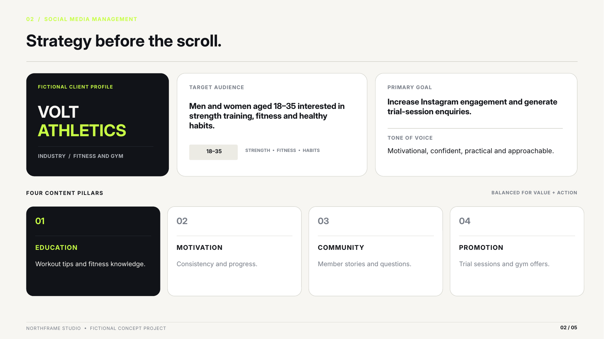
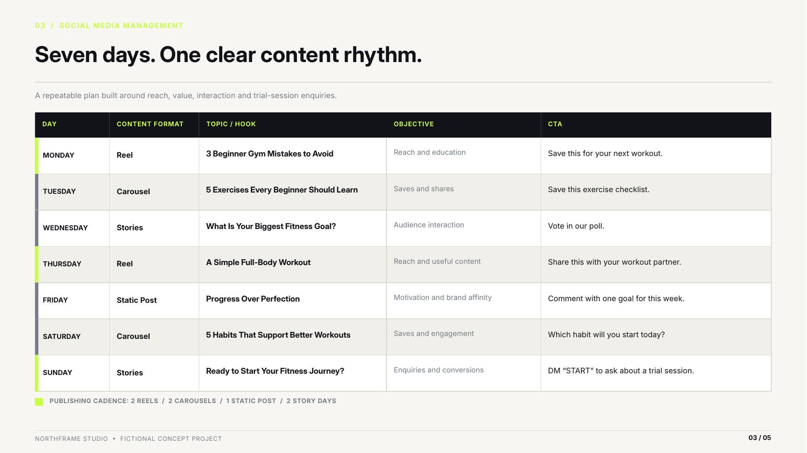
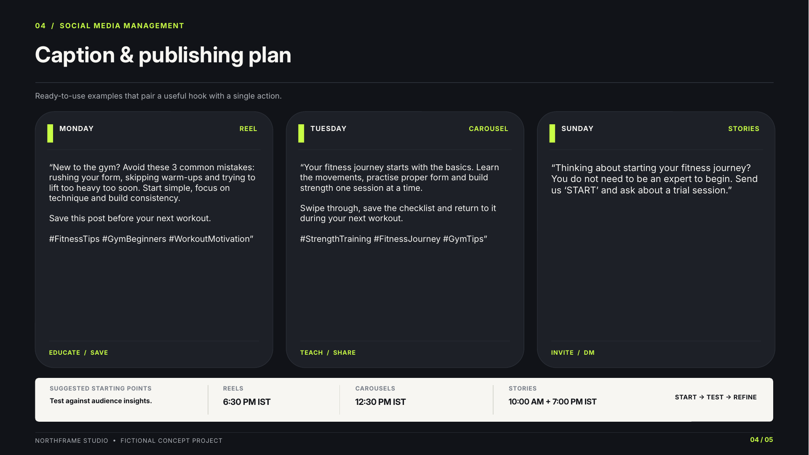
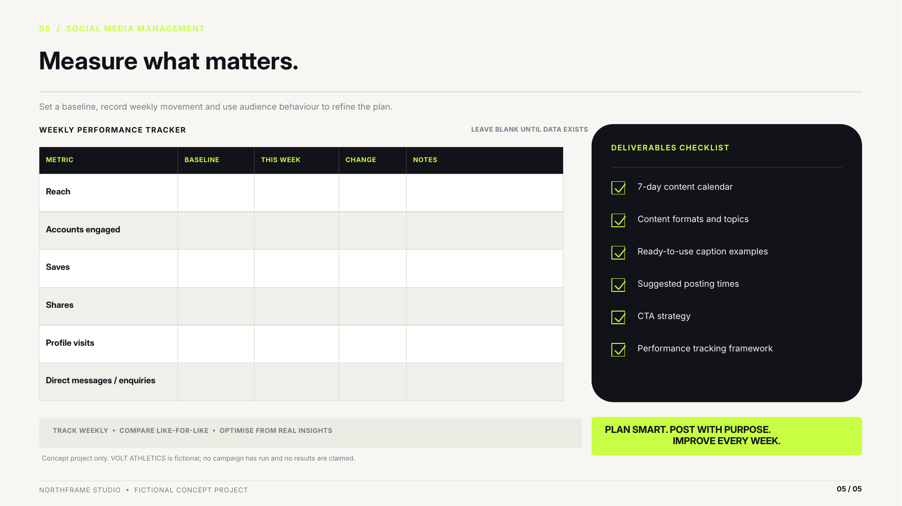

Project 01 / Social Media Management
Seven days.
One clear content rhythm.
A practical weekly Instagram plan balancing fitness education,
motivation, community interaction and trial-session enquiries.
Built to demonstrate a repeatable content planning workflow.
Campaign plan7 Days
Concept brandVolt Athletics
Deliverables5 Slides

Cover image not loading. Check the filename and folder path.
Project Breakdown
One project. Five connected slides.
Each slide covers a different part of the workflow, from the initial
strategy to weekly measurement. Together, they present one complete
portfolio case study rather than five unrelated samples.
01-cover.png could not be loaded.
Slide 01 / Overview
Seven-Day Content Calendar
Introduces the project scope, campaign period and the central idea behind a consistent weekly content rhythm.

02-strategy.png could not be loaded.
Slide 02 / Strategy
Audience & Content Pillars
Defines the fictional audience, primary goal, brand voice and four content pillars: education, motivation, community and promotion.

03-content-calendar.png could not be loaded.
Slide 03 / Weekly Plan
Seven-Day Publishing Schedule
Maps daily content formats, topics, objectives and calls to action across Reels, carousels, static posts and Stories.

04-caption-plan.png could not be loaded.
Slide 04 / Execution
Captions & Publishing Plan
Includes example captions, hooks, hashtags, calls to action and suggested starting times to test against actual audience insights.

05-performance-tracker.png could not be loaded.
Slide 05 / Measurement
Performance Tracking Framework
Provides a blank tracker for reach, engagement, saves, shares, profile visits and enquiries, alongside a deliverables checklist.
What This Project Demonstrates
Structured Planning
A weekly schedule that balances different content formats and audience needs.
Purposeful Messaging
Each planned post has a defined objective and a relevant call to action.
Performance Review
A measurement framework for recording real data and improving future content.
Content Calendar
Instagram Strategy
Caption Planning
CTA Strategy
Performance Tracking
Concept project: Volt Athletics is a fictional brand.
This work demonstrates a proposed planning process. No live campaign,
client engagement or performance results are claimed.
Need a social media plan for your business?
Let's discuss your audience, content needs and project scope.
Discuss a Project ↗